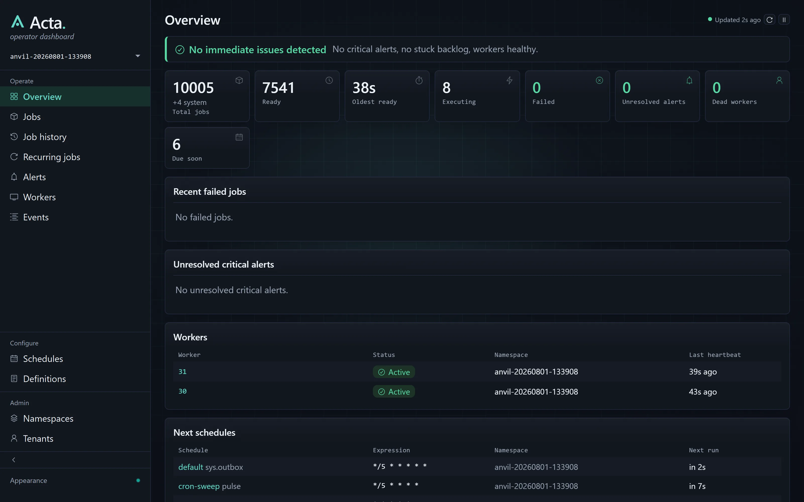

open source · postgres · sql server · sqlite
Acta: durable background jobs for .NET
acta, n. pl. · Latin: the things that have been done; the official record of proceedings.
Durable background jobs for .NET.
Kill the worker. Keep the work.
Enqueue, schedule, retry, and wait on work that survives crashes and deploys. Every job is a row in the Postgres, SQL Server, or SQLite you already run, with fan-out, recovery, a dashboard, and a CLI built in.
Because production happens: workers die holding work, retries repeat side effects, jobs get "stuck" and nobody can say why. Acta makes every job, attempt, lease, and retry durable SQL state you can see, query, and act on: no broker, no sidecar, no workflow SaaS.
The code
A durable job in a dozen lines.
The [Job] name is the durable, operator-facing contract; enqueue is typed, dispatch is source-generated. And the state it creates isn't hidden in a broker or a SaaS console: it's rows you SELECT.
public sealed record DeliverWebhook(Guid DeliveryId, Uri Endpoint, string Payload);
public sealed class WebhookJob(IWebhookSender sender)
{
[Job("deliver-webhook")]
public Task Handle(DeliverWebhook input, CancellationToken ct) =>
sender.SendAsync(input.Endpoint, input.Payload,
idempotencyKey: input.DeliveryId.ToString(), ct);
}
// enqueue from anywhere in the host
await jobs.EnqueueAsync(new DeliverWebhook(
Guid.CreateVersion7(),
new Uri("https://partner.example.com/hooks/orders"),
"""{"orderId":"ORD-1042","status":"shipped"}"""), ct: ct);-- In-flight work and who holds it.
select job_id, job_name, status,
leased_by_worker_host,
lease_expires_at_utc
from acta.jobs_view
where status in ('dispatched', 'executing');Jobs, attempts, leases, events, schedules, checkpoints, workers, alerts: all rows, with curated operator views. A job that failed a month ago is still there to inspect, and to restart with its stored input.
How it runs
A dead worker's lease expires; any peer reclaims the job and continues from recorded state. Optional Redis only rings the bell so idle workers wake sooner: SQL remains the only durable truth.
Claiming
Who runs next?
Order within each lane, parallel work across lanes, and priority among the eligible jobs. The same order holds upstream: a job can be saved in the shop's own transaction, travel through the outbox relay, and reach the workers in the sequence it was staged.
Two lanes, two peer workers, one claim scan.
Step through enqueue, claim, finish, retry, and recover. Then switch to the outbox example to follow an order from the shop's database into the ledger.
acta_outbox table Rows saying “please run this job.” The shop has saved them; a handler has not run yet.
Only eligible lane heads and unlaned jobs enter the claim scan. Blocked jobs stay outside it.
Any peer can take the next eligible job. A lane belongs to the ledger, not a worker.
A2 waits behind A1 even if A2 has higher priority. B1 and the unlaned jobs can run independently. This example shows Direct execution; Buffered workers claim before starting a handler.
Execution is at-least-once; external effects still need idempotency. Lane rules · Outbox ordering
Lane rules
A lane is an ordered line of jobs in one namespace. Only its head can be claimed when eligible; later jobs are Blocked. Success, final failure or cancellation promotes the next job in the same transaction. A retry, delay, pause or durable wait holds the head’s place. Priority never lets a later member jump the line. Different lanes and unlaned jobs can run in parallel, and any peer worker can take a lane’s next job.
Outbox ordering
The outbox is a table in your application’s database. Your transaction saves business data and job requests together. The relay claims those requests, commits jobs to the Acta ledger, then deletes the delivered source rows. Repeating a delivery uses the same deduplication key.
When source rows explicitly name a lane, a later row waits while an older Pending or Claimed row in that namespace and lane remains. A delivery retry holds that source line; quarantine releases it. Once delivered, the ledger lane independently controls execution order. Delivery does not wait for the handler to finish.
Sequentially staged rows preserve staging order. Concurrent producer transactions have no guaranteed order between them. A lane set only on the target job definition starts ordering at ledger admission, not in the source outbox.
Order, exclusion & pacing
Four gates. One axis each.
A lane decides order. A concurrency key or limit decides how many run at once. A rate limit decides how often they start. The gates are independent, so a job passes every one it carries, and a job that carries none is never slowed by them.
One job of the lane at a time, in enqueue order, like an SQS FIFO message group. The lane holds through retries.
o => o.Lane("customer-42")Never two at once per key. Order is not promised: a younger job may take a freed key first.
o => o.ConcurrencyKey("rebuild:acme")The same gate with N slots, per key when the enqueue names one, otherwise for the whole definition.
[Job("rebuild-index", ConcurrencyLimit = 4)]Starts metered on one clock across the namespace’s workers. Early arrivals are booked a turn and come back for it.
[Job("send-invoice", RateLimit = "10/s")]The same five jobs, through each gate.
A1, A2, A3 belong to customer 42 and B1, B2 to customer 73. They arrive in the order A1, B1, A2, A3, B2, and three executors are free. Pick a gate and step through what the ledger records.
o => o.Lane("customer-42")Only lane heads enter the claim scan. Blocked jobs stay outside it, however deep the lane.
Admission happens after the claim and before the handler. A job the gate turns away hands its executor back.
A1 and B1 are claimable. A2, A3 and B2 are Blocked, outside the claim scan, so a deep lane costs the claim nothing. Enqueue order is commit order: two producers cannot interleave a lane.
Execution is at-least-once on every path, so handlers with external effects stay idempotent. A lane head still passes the key and rate gates it carries, and the jobs behind it stay Blocked while they re-arm it. Semantics in full: Lanes · Ordering and exclusion · runnable: 209-concurrency-key
| I need | Gate | Turn it on |
|---|---|---|
| One at a time per customer, in the order they came inItem N+1 starts only after item N finished: succeeded, failed for good, or cancelled. | Lane | await jobs.EnqueueAsync(input, o => o.Lane("customer-42"));Or [Job("sync-orders", Lane = "orders")] on the definition. Start here for "one at a time per entity". |
| Never two at once, and I do not care who goes firstExclusive, unordered work. A failing job releases the key with it. | ConcurrencyKey | await jobs.EnqueueAsync(input, o => o.ConcurrencyKey("rebuild:acme"));The key is also the scope a ConcurrencyLimit applies to. |
| At most N at oncePer key when the enqueue names one, otherwise across the whole definition: four index rebuilds, or four per tenant. | ConcurrencyLimit | [Job("rebuild-index", ConcurrencyLimit = 4)]An operator can change the number on a running system. |
| No more than so many starts a second, across the namespacePacing against a partner API or a shared resource. How often, not how many. | RateLimit | [Job("send-invoice", RateLimit = "10/s")][Job("refund", RateLimit = "10/s", RateKey = "stripe")]Definitions in one namespace that name the same RateKey share one meter, at the same declared rate. |
32 logical cores, NVMe, zero-work handlers, 8 executors, on the 1.0 release candidate's benchmark round. One lane holding a thousand jobs ran about 280 to 330 jobs a second on PostgreSQL and SQL Server with the Direct profile, about 700 to 730 on SQLite with no network hop. A thousand lanes in round-robin ran at 80 to 95 percent of unlaned throughput. One hot concurrency key with limit 1 managed 21 to 24 jobs a second on the servers, because every loser is claimed, bounced, and re-armed. Rough illustrations of the shape of each gate, not capacity claims. Benchmark round
The release certification kills a worker every five seconds while laned jobs run, then checks from the database's own ledger that no lane ever ran two members at once or out of order, and that every lane drained. The same run checks three rate meters, at 10, 50 and 100 starts a second, never admitted past their published budget. Certification records
Cluster-wide
A fleet with no leader.
Every worker is a peer: the same process loop, talking to the same rows. There is no control plane to run, no broker to stand up, and nothing to elect. Add a process and it starts claiming. Kill one and the others carry on, and the work it held comes back through a recovery pass any of them can run.
One namespace, as the database sees it.
Three workers on build 1 share the namespace. Six jobs are due, J4 and J5 carry the concurrency key rebuild:acme, and J6 belongs to a definition the next build drops. Step through a claim, a heartbeat, a kill, the recovery pass, a shared gate, and a rolling deploy.
| job | status | leased by | lease | execution | note |
|---|---|---|---|---|---|
| J1 | Ready | · | · | 0 | |
| J2 | Ready | · | · | 0 | |
| J3 | Ready | · | · | 0 | |
| J4 | Ready | · | · | 0 | key rebuild:acme |
| J5 | Ready | · | · | 0 | key rebuild:acme |
| J6 | Ready | · | · | 0 | handler in build 1 only |
Workers find new rows by polling SQL, a 1 s safety poll by default. The optional Redis wake-up only shortens that wait; it never carries truth.
Each worker registers in the namespace, heartbeats, claims due rows, runs handlers, and refreshes its leases. Nothing else coordinates them: no control plane, no broker, no election. The workers table is the only membership list, and every worker is in it as an equal.
Times are the defaults: 45 s heartbeat, 180 s lease, 315 s before a silent worker is marked dead. Execution stays at-least-once, so a handler with external effects is idempotent on every path. SQLite is the embedded single-node provider; the fleet story is PostgreSQL and SQL Server. Production guide · 705-worker-crash-recovery
sys.recovery, sys.retention, sys.alerts and sys.outbox are recurring slots like any schedule: each fires once per cadence, run by whichever worker claims it. No worker is special, so there is nothing to fail over.
The heartbeat interval is the only coordination knob. The lease window is four heartbeats and the dead-worker threshold seven, both read-only, so replicas that agree on the heartbeat agree on everything else by construction.
The 1.0 certification ran 24 worker processes of 64 executors each, 1,536 concurrent slots on one database, with a worker killed every five seconds. Every one of a million jobs finished and no recorded step ran twice, checked afterwards from the database's own ledger, on PostgreSQL and on SQL Server. What one run showed, not a capacity claim. Certification records
Install
One provider package. Nothing new to run.
The provider package carries the runtime, the source generator, the analyzers, and the operator CLI. No broker to stand up, no sidecar, no service to operate. The embedded dashboard is one more package, Acta.AspNetCore, when you want it. Acta is still in release candidates, so the commands carry --prerelease.
dotnet add package Acta.Sqlite --prerelease
dotnet add package Acta.Postgres --prerelease
dotnet add package Acta.SqlServer --prerelease
Requires .NET 10. The schema is a precondition, not a side effect: apply it with the committed provisioning script, or set ApplyMigrationsOnStartup for local work. Use Acta when the work must outlive the process that started it.
What you can build
Work that outlives the process running it.
Different domains, one shape
Acta has no domain types and never will: no Agent, no Pipeline, no Workflow. It does not care whether a step calls a model, a payment rail, FFmpeg, or a machine. What these have in common is work measured in minutes or days, expensive to repeat, and unacceptable to lose.
AI agents and LLM pipelines
A retried agent step repeats the latency, the tokens, the tool calls, and the human approval, and a nondeterministic model does not repeat the same answer. Your agent can reason again; it should not have to do the work again.
RunStepAsync persists a completed stepWaitSignalAsync holds approval for days
GetOrSetVariableAsync is memory that survives the process
Document processing
Ingest, OCR, extract, validate, index. A thousand-page batch is a thousand chances to lose the eight hundredth page, and re-running the whole batch to recover one document is the thing you are trying to avoid.
MapAsync fans a batch out with lineageJobPayload by reference for large artifacts
ctx.NoteAsync for the per-document audit line
Media and video encoding
A render measured in hours, several renditions per source, and a publish step where doing it twice is worse than reconciling an uncertain outcome, even though the encode around it may be attempted many times.
MapAsync fans out one encode per renditionAtMostOnce() on the publish
leases reclaimed when the encoder box dies
Manufacturing and physical processes
ERP above, machines below, and Acta coordinating the business process between them. The six-hour cure, the cooldown, the maintenance window: nobody argues those should hold a thread.
SleepAsync for a wait measured in hoursAtMostOnce() where a repeat is a physical event
never real-time or safety control
Orders, billing, and payments
When they share a database transaction, the job and the business row commit together or not at all, so there is no window where the order exists and the work to fulfil it does not. Then one customer's work never overlaps itself, without a queue per customer.
Transactional enqueue in your own commitDeduplicationKey makes a retry free
Lane one at a time per customer, in order
Pipelines, backfills, and ETL
Scheduled work that must be explainable a month later: what ran, when, why it failed, what it produced, and whether the backfill you started on Friday is still going.
[JobSchedule] with cron or a durationretries budgeted, not unbounded
the ledger is the audit trail
Engineering labs
The decisions behind it, each one runnable.
Nine questions, answered in rows
An Engineering Lab is a small project in the repository whose README carries the whole loop: the question, the alternatives, what the design costs, the exact rows that prove the behavior, and what happens when a worker dies at the worst moment. The field guide sequences them into a 45-minute tour.
Can recurring work run forever on one row?
One reusable job identity and one cursor per schedule. Due schedules re-arm the same slot instead of inserting a job per tick, coincident schedules coalesce into one execution that names which of them fired, and a missed window is a per-schedule decision, skip or catch up once, never an accident of the worker loop.
103-multiple-schedules106-schedule-misfire
Can real-database tests take milliseconds and run in parallel?
Acta.Testing drives the real runtime one tick at a time: a tick is one claim plus one handler run, with no polling, no sleeps, and no background worker racing your assertions. Each test host owns its own schema, so one database serves many tests at once, and an end-to-end job test finishes in tens of milliseconds.
docs/guide/testing.md
Can SQL replace a job queue, without a leader?
Claim, heartbeat, lease, and recovery are SQL operations, and recovery itself is an ordinary competitively claimed recurring job, so no worker is ever the leader. The lab kills worker A in the middle of an attempt and lets worker B recover the same durable identity from the rows A left behind.
705-worker-crash-recoveryPostgreSQL or SQL Server
Can the worker binary be the admin tool, and can a job explain itself?
Start the same app with jobs … and it runs Acta's CLI with the app's real manifest, dependency injection, and database. info is the snapshot, events the path to it, explain turns durable state into operator guidance, and jobs debug claims one persisted job and runs it under your debugger's breakpoint.
Can hot keys stop blocking workers?
Admission happens after the claim and before the handler. The loser of a concurrency key re-arms with a short delay and hands its executor back instead of waiting on a lock, ConcurrencyLimit sizes the gate to N at once, and RateLimit books each job the next free instant rather than letting a crowd re-race a counter.
Can a job refuse unsafe replay?
AtMostOnce() records the intent before the body runs. Re-entering a slot that is still pending marks it interrupted and throws instead of calling the body a second time, so the handler reconciles a charge that may or may not have happened rather than repeating it and hoping.
Can fan-out be ordinary jobs?
Children are normal jobs with their own retries, workers, results, and events. The parent suspends without holding a lease, and each child's terminal outcome sets a checkpoint the parent owns, so the join is a durable latch in a row, not a thread waiting on a task.
211-child-jobsCan the schema be the runtime?
One checkout identity is a handful of relational facts: completed step outcomes, a durable variable, a signal latch, a timer, a terminal result, and an append-only event ledger. The worker executes from those rows and operators read the same rows through curated views. The hot runtime row is split from the job row, so it stays tiny.
201-durable-checkoutCan the data model stay this small?
Every persisted code family is a small integer, a tinyint or smallint rather than a status string, with the names generated beside it. The job row is append-mostly: only an operator’s input amendment rewrites it; the hot runtime row carries only what changes, keeps the definition behind a surrogate id, and stores no JSON. Column widths come from one fixed ladder, so a hot row stays narrow, an index stays dense, and an update rewrites bytes, not pages. The model is frozen at 1.0: no renames, drops, retypes, or renumbered codes, ever, and anything new arrives as an additive migration a rolling deploy can run.
docs/internals/design.md
How it compares
You know these tools. Here is the difference.
This table is the short version. The full fit guide covers when to keep exactly what you have. Choosing Acta
The dashboard
See exactly what your jobs are doing.
The embedded dashboard reads the same durable rows you can query yourself (backlog, failures, dead workers with heartbeats, next schedules) and says what needs action. It ships inside your app as a library, local-only by default (browse to it as localhost or 127.0.0.1), with mutating verbs off until you enable them; removing the local-only guard without configuring authorization does not degrade, it refuses to start.

Numbers & boundaries
Measured, not promised.
One rig (32 logical cores, NVMe), the release preset (one warmup, one measured run, 5,000 jobs), the release candidate beside the previous one in the same hour, for regression tracking and rough sizing, not capacity claims.
4,708 tests on every run. The median end-to-end test takes 29 ms on PostgreSQL.
Each of about 945 conformance specs drives a real Acta runtime, claiming, executing, settling, and recovering, against a real database, and the same spec runs on all three providers: 2,811 end-to-end runs plus 1,897 unit and contract tests. Test speed is a feature, so the suites are measured, too.
| Suite | Tests | Wall | p50 | p90 | p95 | p99 |
|---|---|---|---|---|---|---|
| Unit and contractno database | 1,897 | 12 s | 0.4 ms | 44 ms | 62 ms | 151 ms |
| End to endPostgreSQL | 945 | 12 s | 29 ms | 92 ms | 224 ms | 2.34 s |
| End to endSQLite | 91924 provider-skipped | 28 s | 13 ms | 44 ms | 121 ms | 1.08 s |
| End to endSQL Server | 947 | 21 s | 31 ms | 111 ms | 365 ms | 2.39 s |
Wall is the whole suite as it normally runs, every test in parallel against one database, each suite on its own. The percentiles are each test's own time, from the same suite run one test at a time, so they leave out waiting for other tests. The p99 tail is the chaos and timing specs that wait out a lease or a poll on purpose. Measured 2026-10-01 on the release candidate against fresh databases, one rig: 32 logical cores, NVMe, Docker PostgreSQL 18 and SQL Server 2022. Beyond the suites, every release also runs soaks on all three providers, a rolling-upgrade smoke, a deployment smoke behind a real nginx proxy, a package smoke, and the chaos certification. Certification records
- No deterministic replay, checkpoints instead; completed slots don't re-run.
- No BPMN, no visual designer, no message bus, no hosted control plane.
- At-least-once execution, recorded step outcomes are repeat-safe; external effects still need idempotency or reconciliation.
AtMostOnce()trades possible duplication for an explicitly ambiguous outcome. At-most-once steps - Not for every job: disposable local loops belong in
BackgroundServiceor cron.
Capabilities · quick reference
The core inventory, in five columns.
The one-line version of everything Acta does. Each item is expanded, with the API that does it, in the full reference below.
Jobs & scheduling
- Fire-and-forget · delayed · recurring under one model
- Durable retries with typed backoff: policy, not folklore
- Persistent schedule cursors: missed windows explicit; one stable job row
- Deduplication keys stop blind repeats at enqueue
- Atomic enqueue with your data: one transaction, or the external outbox
Execution primitives
- Named durable steps: recorded outcomes return on re-entry
AtMostOnce(): record intent before invocation; reconcile an interruption- Durable sleeps & signals: wait days, hold no thread
- Checkpoint slots: resume with intermediate results
- Child jobs: fan-out / fan-in, lineage
- Lanes: strict order per key; only the head is claimable
- Concurrency keys, limits & locks
- Rate limits:
600/mper definition, one meter per key
Failure & recovery
- Leases with automatic lapse: leaderless reclaim & retry
- Survives crashes, rolling deploys, restarts: two builds share a namespace, a rollback just works
- Explain: a job tells you why, and what next
- Restart month-old failures with stored input
- Failure alerts: queryable rows
Visibility & ops
- Everything SQL-visible: with curated operator views
- Append-only event ledger per job
- Embedded dashboard: an operational tool
- CLI in every host: incl.
jobs debugunder a breakpoint - Opt-in controls: pause, cancel, restart, signal
- Namespaces & tenants: who runs the work, who it is about
Engineering quality
- pg · mssql · sqlite: one operational model
- Generated dispatch, NativeAOT, no reflection
- 1 SQL round-trip per state change
- Deterministic test host: real-DB tests in tens of ms
- Typed contracts:
[Job]is the durable name - Redis as a bell only; pluggable payload serializers
- Anvil lab: a million jobs, kill workers, watch recovery
Capabilities · in full
Every capability, in plain terms.
The quick reference above, expanded: what each piece does, how it behaves when things fail, and the API that does it.
Jobs & scheduling
- Fire-and-forget jobs
- Mark a method with
[Job("name")]and callEnqueueAsync(input). Enqueue is typed, dispatch is source-generated from your project manifest, and the job name is the durable, operator-facing contract. The host that enqueues can also execute: no separate worker process to deploy unless you want one. - Enqueue and wait
RunAndWaitAsyncenqueues, waits for the terminal outcome, and hands back the typed result: request-response over durable execution, for the places where fire-and-forget isn't an answer.- Delayed jobs
- Enqueue with a not-before time. The job is durable, SQL-visible state from the moment of enqueue and is dispatched when due: surviving any restarts in between.
- Recurring schedules
[JobSchedule]with an interval (5m) or cron expression. One stable slot job carries moving schedule cursors instead of creating a job row per firing. Missed windows are visible and handled by explicit misfire policy, and operators can pause a schedule (with an auto-resume time if they want one), resume it, or fire it immediately with trigger-now, all without touching the cadence.- Deduplication keys
- Enqueue with a caller-supplied key and a duplicate enqueue returns the existing job instead of creating a second one: resubmitting the same form doesn't enqueue the email job twice. It deduplicates the job row, not the side effect: execution stays at-least-once, which is what durable steps and idempotency keys are for.
- Retries with typed backoff
- Retry count and backoff are explicit, typed policy on the job, not folklore in a catch block. Attempts are counted on the job row, and at the default audit level each one is recorded as start and finish events, so "how many times did this run and when" is a query.
- Atomic enqueue with your data
- Enqueue on the transaction you already opened, so the job and the business write commit or roll back together in the same database. When the job belongs to a different database, stage the handoff in your own transaction with
AddToActaOutboxAsyncand the built-insys.outboxrelay moves it into the ledger, deduplicating and quarantining as it goes. Neither is a universal exactly-once guarantee: the guide states exactly what each one buys.
Durable execution
- Durable steps
- Wrap work in a named durable step. The outcome is recorded in the database; when the handler re-enters after a crash, retry, or suspend, a completed step returns its stored result. External side effects still need idempotency because a process can die after the effect but before its outcome is recorded. Checkpoints, not replay: no determinism rules on your code.
- At-most-once steps ·
AtMostOnce() - For side effects where a duplicate is worse than an ambiguous interruption. If the process dies after Acta records the start, the body is not invoked again; it may have run zero or one times, and the handler must reconcile deliberately. On SQLite under the Direct or Bulk profile the guarantee holds across a process crash but not across power loss, so run such steps under Buffered there.
- Checkpoint slots
- Save intermediate values mid-handler and read them back after a crash or restart: resume long work where it left off, with the evidence in a row.
- Durable progress
SetProgressAsyncwrites typed progress into a reserved checkpoint slot: a long import can say "43,000 of 90,000", and the dashboard, the API, and plain SQL all read the same row.- Durable sleep
- Sleep for minutes or days without occupying a worker thread. The job leaves the worker, the timer is durable state, and the job is re-dispatched when it fires: surviving deploys in between.
- Signals
- A job can suspend until a named signal arrives: a webhook, an approval, another job finishing. Deliver the signal from anywhere: code, CLI, or dashboard. No worker is held while waiting.
- Child jobs, fan-out / fan-in
- Spawn jobs from a handler; parent lineage is recorded, so a batch that fans out into a thousand items stays traceable, and the parent can wait on the children's results.
- Lanes
.Lane("customer-42")on the enqueue, or[Job("...", Lane = "...")]on the definition, runs the lane's jobs one at a time in enqueue order, like an SQS FIFO message group. Only the head is claimable; the jobs behind it wait as Blocked, outside the claim scan, and the transaction that finishes the head promotes the next one. A failing head keeps its place through its retries, so a poison item needs a retry budget. Different lanes run in parallel, and jobs without a lane are unaffected. How it compares to a concurrency key- Concurrency keys & locks
- Serialize work that shares a key: one settlement run per account at a time. A
ConcurrencyKeybounces the losing job back to the queue so no worker waits on it;RunWithLockAsyncwaits inside the running handler instead, for the small critical section that wants it. Exclusion rides the lease, and admission order is unspecified: exclusive, unordered work. - Concurrency limits
[Job("...", ConcurrencyLimit = 8)]caps how many jobs run at once per concurrency key across the whole fleet, or across the definition when the enqueue names no key, admitted through slot rows in the same lock store. A job the limit turns away bounces back to the queue budget-neutral, so no worker waits on it, and the limit is an operator-overridable policy slot on a running system.- Rate limits
[Job("...", RateLimit = "600/m")]meters how often a definition may start. An idle meter admits one second's worth of the rate at once and then one per interval; every job that arrives early books a turn and comes back for it, so a backlog drains at the rate with no re-race, and definitions that share a key share one meter. The contract is the upper envelope, measured under chaos on every provider: never more than the rate plus its burst over any window.- Job results
- Return a value from a handler and fetch it later by job reference: the result is durable state like everything else.
- Handler-directed outcomes
- A handler can end its own run deliberately: reschedule itself to a chosen instant, fail with a stated reason, cancel, or pause for an operator. The outcome is policy stated in code, not an exception dressed up as control flow.
Failure & recovery
- Worker leases & heartbeats
- A claimed job carries a lease held by a live, heartbeating worker. Kill the process: the lease lapses on its own. You can watch it happen in the workers table.
- Leaderless recovery
- Any surviving worker reclaims lapsed jobs and retries them. There is no coordinator, no leader election, no recovery service to run: recovery is itself ordinary durable work.
- Rolling deploys
- Two builds share a namespace while a deploy runs, and a rollback is the same picture in reverse. A worker that claims a job it has no handler for hands it back and stops claiming that definition; registration never retires a definition the new build omits, so the old fleet finishes its work and a rollback is just starting the old build. Retiring a definition and cancelling its queue is an operator verb, on the API and the dashboard.
- Explain
- Ask any job why it is in its current state and what happens next. The answer comes from its recorded rows, not from log archaeology.
- Restart with stored input
- A job that failed a month ago is still a row, with its input. Restart it as-is: no re-constructing the payload from logs. The restart runs whatever the row holds now, so if an operator amended the input first, the amendment is what runs.
- Job repair, beyond restart
- Reschedule a job to run now or at a chosen instant, amend its stored input (bounded metadata records that you did), or purge it outright: the repair verbs operators actually reach for, durable and audited like everything else.
- Failure alerts
- Failures raise alert rows by default: query, route, and resolve them like everything else, on-failure visibility without bolting on a separate alerting pipeline. An outage is one open incident per job and reason that re-notifies on the reminder interval (daily by default) until it resolves, not a row per failure. Per-definition profiles can quiet a job down to terminal failures only, or to nothing.
- Outbox quarantine
- The
sys.outboxrelay deduplicates as it admits staged work, and what cannot be admitted lands in a quarantine you can read, requeue, or discard: from code, the dashboard, or HTTP, with the decision recorded.
Visibility & operations
- SQL-visible state, documented
- Jobs, leases, events, schedules, checkpoints, workers, and alerts are ordinary rows, with curated operator views (
acta.jobs_viewand friends) for the common questions: backlog, stuck jobs, worker liveness, open alerts. The model is documented column by column - 16 entities with their keys, indexes, and checks - and the full provisioning SQL for all three providers ships in the repo, so you can read the schema before you adopt it. Attempt-by-attempt history rides the event ledger, as complete as the definition's audit level. - Append-only event ledger
- Every job carries an append-only timeline of what happened to it - executions started and finished, retries, suspensions, signals, operator actions, completion - as queryable rows. The audit level chooses how much of it each definition writes: the full timeline at
Audit, failures only or nothing at all where churn matters more than history. - Notes & manual alerts
ctx.NoteAsyncappends handler-authored evidence to the job's timeline even where audit is turned down;ctx.AlertAsyncopens an alert the handler decided is worth an operator's attention. Both are rows, like everything else.- Built-in metrics
- An
Actameter emits executions, durations, claims, steps, live executing jobs, lock contention, and alert activity throughSystem.Diagnostics.Metrics: OpenTelemetry picks it up with one line, no Acta-specific exporter. - Embedded dashboard & JSON API
Acta.AspNetCoreserves an operational dashboard and query API from inside your app. Local-only by default (requests from this machine, addressed as localhost or an IP), no login system to configure, and every mutating verb is disabled until you explicitly enable it.- Embedded CLI · including
jobs debug - Every host binary is also the admin tool.
jobs debugclaims an eligible persisted job - one this host's manifest knows and no worker is running right now - and steps through its real handler under your debugger: reproduce a production failure with a breakpoint, not printf. - Operator verbs, opt-in
- Pause, resume, cancel, restart, signal: explicit controls for humans running the system. Over HTTP and the dashboard they are off by default, so remote exposure is a decision, not an accident. The in-binary CLI ships enabled - it already implies shell access to the host - and
DisableCli()turns it off where even that is too much. - Namespaces & tenants
- Two questions, one job row. A namespace answers who owns and runs the work: routing, team-ownership metadata, and the peer workers that drain it. A tenant answers who the work is about: registered once by an opaque business key, resolved at enqueue, inherited by child jobs, carried into the event timeline, and readable beside every job in
acta.jobs_view. Definitions can require or forbid tenant scope, and suspending a tenant rejects new enqueues at the commit boundary; jobs already admitted keep running, and children they spawn inherit the tenant with them. Namespaces carry the same operator lifecycle: list, suspend, resume, and version-checked metadata updates. A tenant is an audit, query, and runtime dimension, not a security or database-isolation boundary.
Engineering
- Three SQL providers
Acta.Postgres,Acta.SqlServer,Acta.Sqlite: one reference is enough, and all three share the same schema shape and operational model. Develop against an embedded SQLite file; ship the same code against your server.- Execution profiles
- Buffered, Direct, and Bulk choose the throughput-durability trade explicitly, per worker. Bulk group-commits completions and is meant for safely re-runnable work (a deep lane on Bulk hands off at the flush cadence, a few jobs a second, so deep lanes belong on Direct or Buffered); the docs state exactly what each profile relaxes.
- Source-generated dispatch, NativeAOT
- Handlers are dispatched through generated code (no reflection on the hot path). NativeAOT is exercised, not asserted: every shipped package declares AOT compatibility and the bundled lab app publishes under NativeAOT as a gated test. SQL Server is the exception at publish time, because
Microsoft.Data.SqlClientis not a Native AOT target. One SQL round-trip per state change. - Deterministic test host
Acta.Testingdrives the real runtime one tick at a time: no sleeps, no polling, no flaky waits. Real-database job tests run in tens of milliseconds.- Contract-drift guard
- Worker startup compares each job's input and output contracts against what the ledger recorded, and warns or refuses - your choice - before a mismatched payload meets a live queue.
- Payload codecs
- JSON, text, and bytes ship built in; the serializer registry is pluggable per job, with worked MessagePack and gzip examples in the concepts.
- Redis as a bell, only
- Optional
Acta.Rediswakes idle workers faster. It is never a source of truth: lose Redis and you degrade to polling, not to data loss. - Anvil · the failure lab
- The bundled load-and-failure laboratory: enqueue a million jobs, kill real worker processes mid-flight, and watch leases lapse and recovery reclaim the work, on your machine.
- Published baselines
- The benchmark matrix and its methodology ship in the repo, with dated results on documented hardware: sixteen worker processes on the conservative Buffered profile drained about 6,800 jobs/s on PostgreSQL and 6,300 on SQL Server (1.0 release candidate round, 32 logical cores, NVMe). Regression evidence and rough sizing, not capacity promises: re-run it on yours.
Policy & operations
- Priorities & reprioritization
- Claim priority is per-definition policy, and operators can change it in place on a live job with
ReprioritizeAsync, no cancel-and-re-enqueue dance. - Live policy overrides
- Priority, retries, backoff, timeout, deadline, retention, audit, alerting, the concurrency limit, and the rate limit can be overridden per definition on a running system, guarded by expected-version checks: tune a hot job without a deploy.
- Durable named settings
- Global, namespace, and definition-scoped settings live in the ledger next to the work: compare-and-swap writes, audited changes, new names without a migration. Configuration your operators can see.
- Execution timeouts & deadlines
- Per-definition execution timeout, plus whole-job deadlines in two strengths: a Strict deadline terminates the job; an Advisory one sets
ctx.IsOverdueso the handler can degrade gracefully. - Batch enqueue
EnqueueBatchAsyncalongside single enqueue for high-volume producers, one round-trip for many jobs.- Tags & correlation keys
- Attach searchable tags and a caller-supplied correlation key to any job, so operators can find work by what it means to the business, not just by id. Tags reach past jobs: tenants, namespaces, definitions, schedules, workers, alerts, and events all take them.
- Time-zone schedules
- Recurring schedules run in a named time zone. Operators preview upcoming instants and override expression or zone with expected-version checks.
- Alert routing
- Definitions route alerts to named channels; startup validation of that routing is a policy you choose. Off, Warn, or Fail.
- Audit levels & retention
- Audit level and retention are per-definition contract values; terminal job rows purge on schedule while events remain the audit ledger.
- Large payloads, by reference
- Inline payloads are capped (1 MiB default; oversized writes are refused, not truncated). Big artifacts belong in blob storage with the job carrying a reference - URI, checksum, size, content type - a pattern the concepts show worked end to end. The cap is Acta's; the blob store and the verification stay yours.
Run it
Acta est. Now run it yourself.
Fresh clone to a running durable job on embedded SQLite: then point the same code at Postgres or SQL Server when it matters. Apache-2.0: the runtime, dashboard, CLI, and all SQL providers are free.
$ git clone https://github.com/acta-dotnet/acta && cd acta
$ dotnet run --project concepts/000-fundamentals/001-hello-acta
Enqueued. The worker is running - press Ctrl+C to stop.
Hello, World!
# press Ctrl+C, then:
$ dotnet run --project anvil/Anvil
Anvil : http://127.0.0.1:5059/